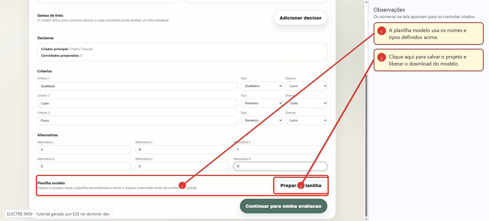
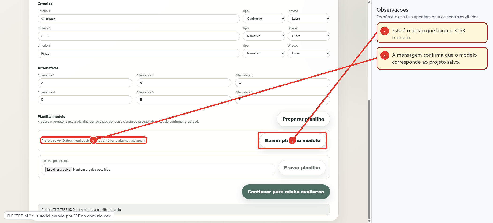
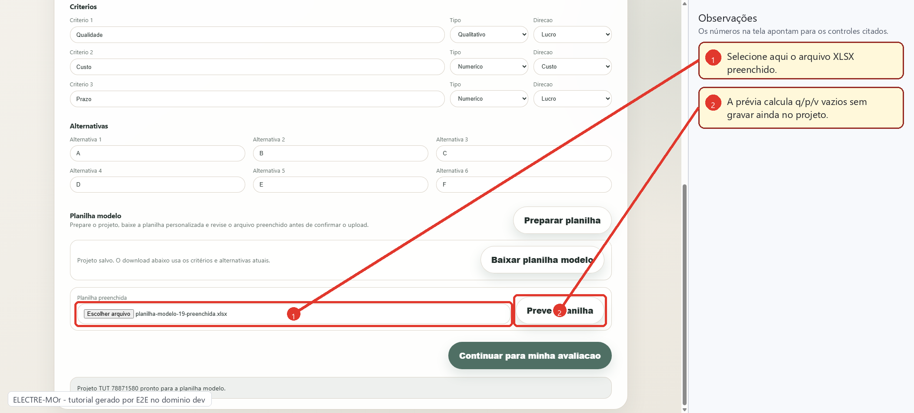
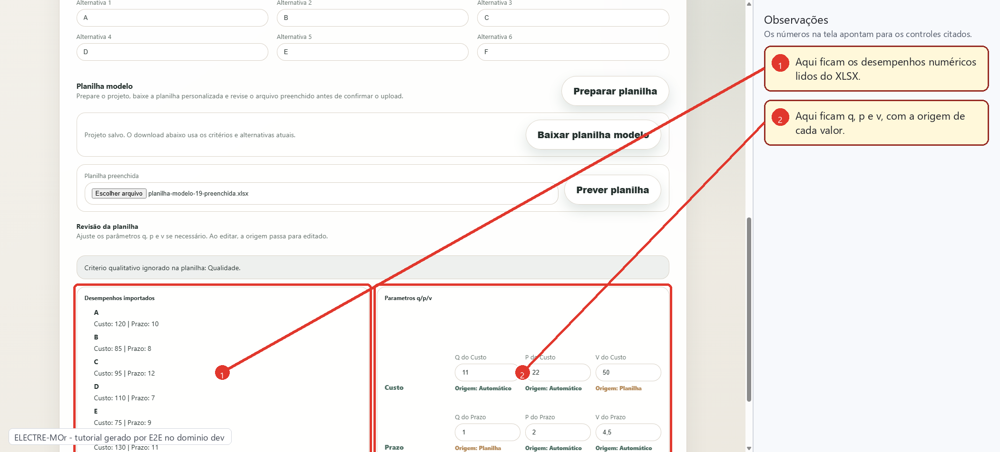
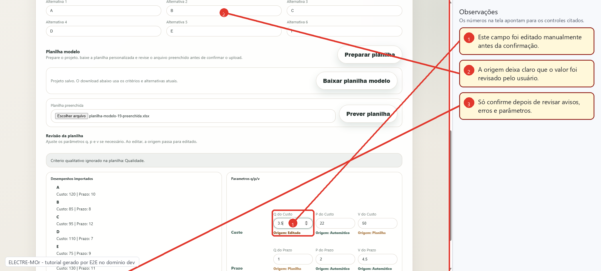
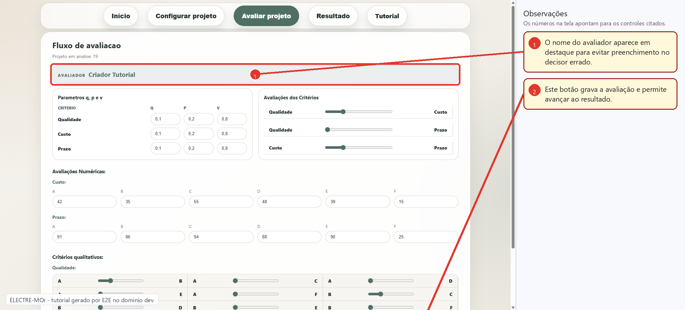
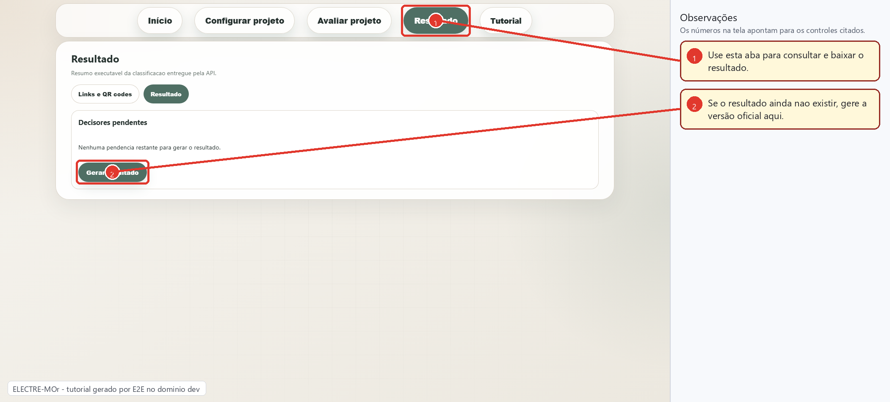
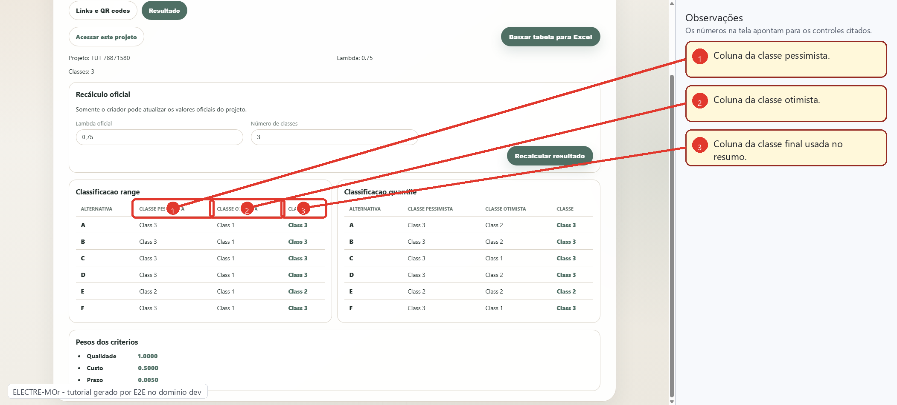
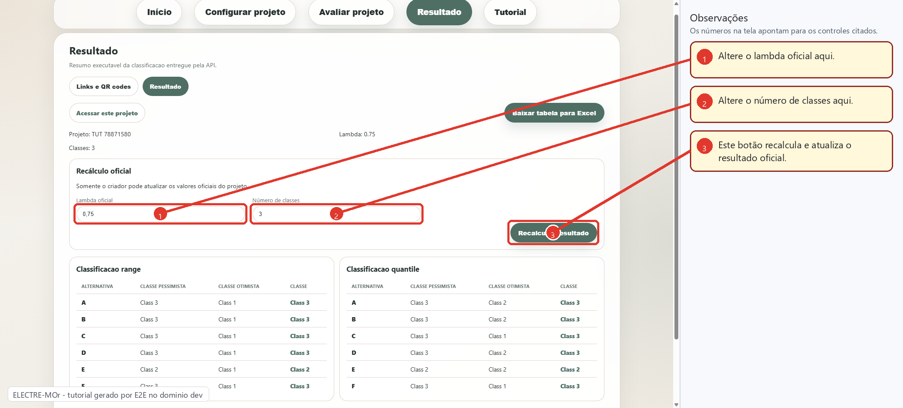
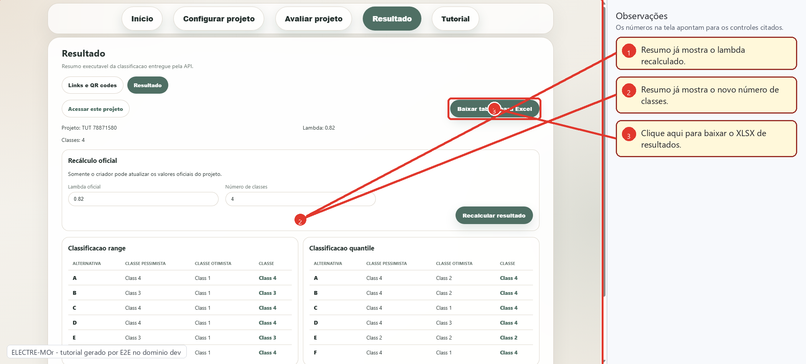

Passo 01
Configuração pronta para gerar a planilha
Depois de informar o projeto, critérios e alternativas, a área de planilha fica pronta para criar o modelo personalizado.

Este guia foi gerado por um teste E2E no ambiente de desenvolvimento. As imagens mostram o fluxo real no navegador, com setas indicando os pontos importantes para preparar a planilha, enviar os dados, gerar o resultado e baixar o XLSX final.
Depois de informar o projeto, critérios e alternativas, a área de planilha fica pronta para criar o modelo personalizado.

Com o projeto salvo, o botão de download gera um arquivo XLSX já com abas, critérios e alternativas do projeto.

Depois de completar o arquivo, selecione a planilha preenchida e gere a prévia antes de gravar qualquer dado.

A revisão mostra desempenhos importados e indica se q, p e v vieram da planilha, foram calculados automaticamente ou foram editados.

Quando o usuário altera um parâmetro, a origem muda para Editado. A confirmação usa exatamente os valores revisados nessa tela.

O upload preenche os critérios numéricos, mas o decisor ainda precisa salvar a avaliação completa no fluxo normal.

A tela de resultados separa links/QR codes da tabela final. Para baixar a tabela, entre na aba Resultado.

A tabela mostra as mesmas informações exportadas: classe pessimista, classe otimista e classe final.

O criador pode ajustar lambda e número de classes. Ao recalcular, esses valores passam a ser oficiais para o projeto.

Depois do recálculo, o botão de download exporta a versão oficial exibida na tela.
